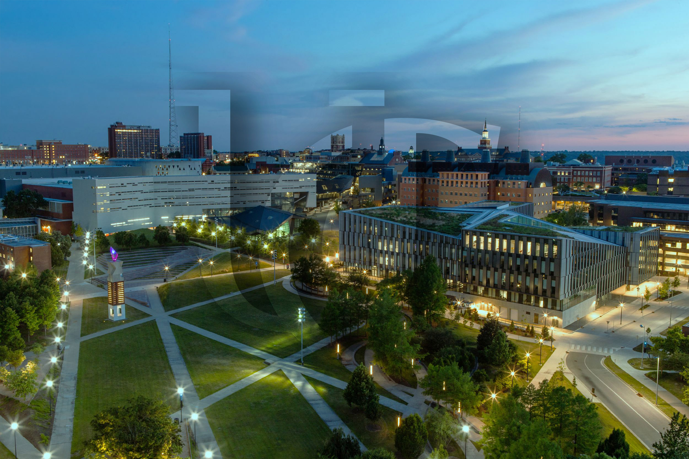

In what way did you personally grow this year? How did you demonstrate or rebuild the resilience needed to move forward? How will you utilize resources and your support network to hold yourself accountable in continuing this growth?
Though I spent most of my junior year on Co-op, I was able to make unforgettable memories during both my Co-op and the Fall semester. The Summer of 2023 was spent at my new Co-op at Siemens, where I had the opportunity to work on something completely different from my previous role at GE. This change of pace was very refreshing and allowed me to broaden my skills and experience. Additionally, I made a lot of new friends with whom I spent time outside of work, enhancing my social life and creating lasting memories.
During this time, I also started picking up new hobbies, including running a DND campaign and learning to play the piano. These served as creative outlets that I very much needed because they got me out of my slump. DnD is an extremely fun pastime and a new way to be social, and I still do it today and will probably always do it as long as I have the free time for it. Producing beats was something I dabbled in a long time ago, and adjacent to that and synths is the piano. Since the piano is more grounded in musical theory, I thought I would try to learn it. It's been a fun way to pass time when I'm alone, and I sometimes easily find myself losing track of time while practicing, completely immersed in the music.
These hobbies continued during my Fall semester, where I took a full 18 credit hour workload with hardcore major classes such as Automata. This class is notoriously difficult for CS majors, requiring significant dedication and effort. Despite the heavy academic load, I found that I enjoyed the rigor and the challenge. I was a bit disappointed that I couldn't fit in an honors class or trip due to my schedule, but I still have a year left and plan to take advantage of such opportunities in the future.
During the Spring of 2024, I returned to Siemens for another Co-op rotation. This time, I was assigned to a different project, working with another student from UC in C++. This shift from web development to C++ was a refreshing change and proved to be very enjoyable, especially because of the collaboration with my peer. This year felt like catharsis from my last year, offering a blend of professional growth, personal development, and academic challenge. I feel like this was a much needed change in my lifestyle moving forward. I'm thankfull and blessed to have a support network like professors at UC, advisors, and other students to help me through critical times.
Looking back, my junior year was filled with significant milestones and personal achievements. From making new friends and exploring new hobbies to tackling challenging coursework and excelling in my Co-op roles, this year has been transformative. I am looking forward to my final year at UC and hope to make the most of it, building on the foundation laid during this unforgettable junior year.
“Obstacles don’t have to stop you. If you run into a wall, don’t turn around and give up. Figure out how to climb it, go through it, or work around it." - Michael Jordan
